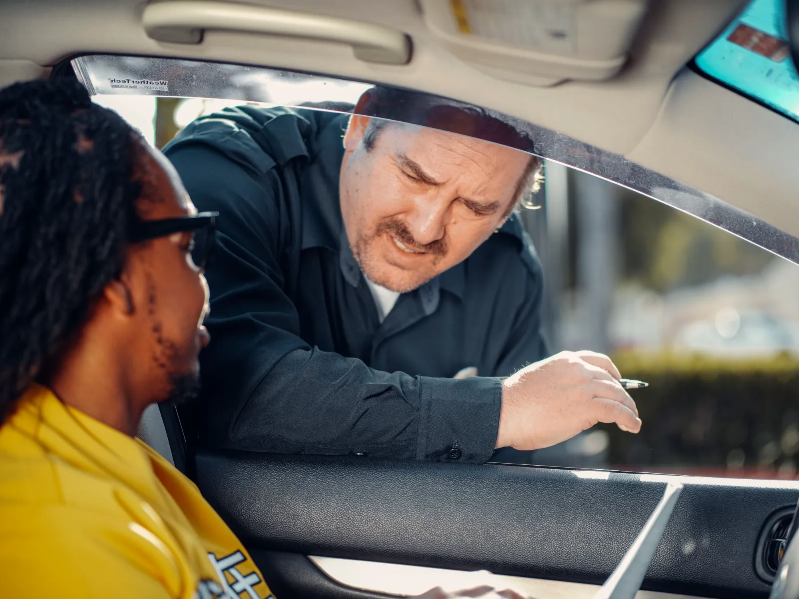
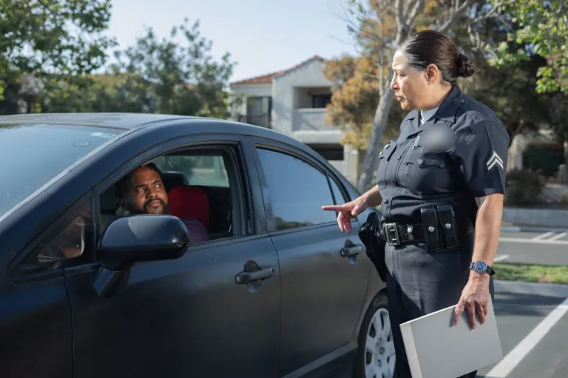
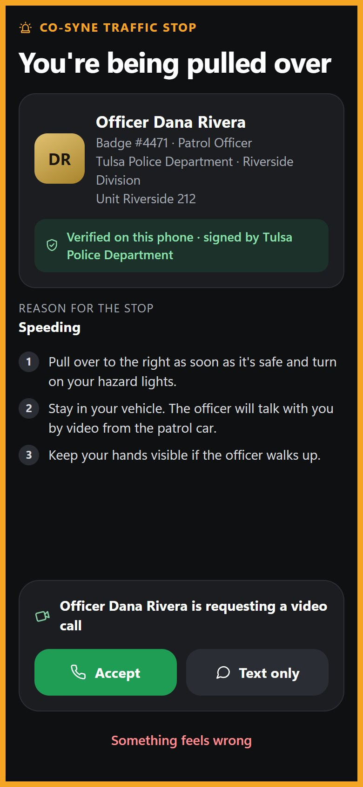
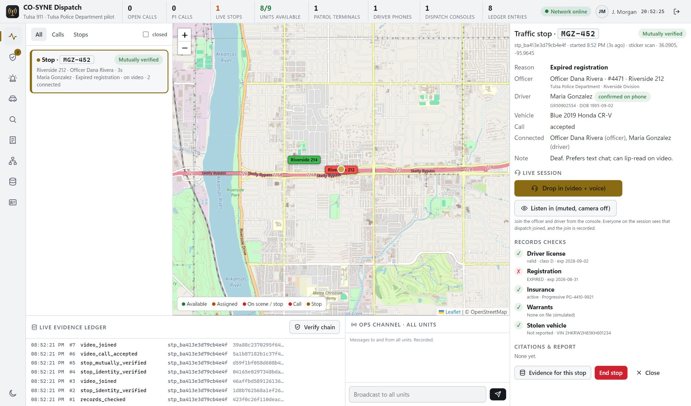
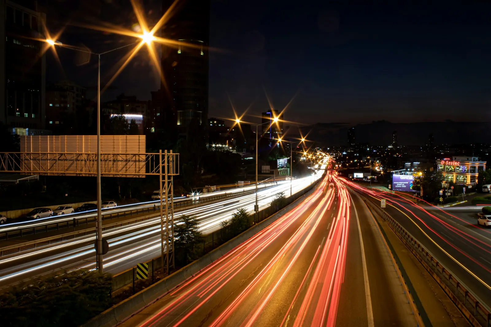

Trust at the roadside
is infrastructure.
The verified handshake between drivers, officers and dispatch, starting with the most frequent contact between government and the people it serves.
The traffic stop is where most people meet the police.
Sources: Stanford Open Policing Project; U.S. Bureau of Justice Statistics, Contacts Between Police and the Public, 2020.
Every stop starts with uncertainty on both sides of the window.
The first sixty seconds decide a stop's outcome, and today neither side can verify the other. Whoever makes that moment verifiable becomes the trust layer for the roadside.
CO-SYNE is the verified handshake layer.


One stop, start to finish, on one record.
Start with the stop. Grow on the same network.
Each partner makes the network more valuable to the next.
The full platform is live and demonstrable.
- Driver app, Officer terminal, Dispatch and Main Admin, live at iobeacons.com/cosyne
- Installable on phones, laptops and desktops, with phone alerts
- An end-to-end verified stop working in demonstration
- The Tulsa, Oklahoma pilot in preparation
Records checks and payments are simulated until state integrations.

Through officials, with grant-funded pilots and cooperative contracts.

13 states in four evidence-gated waves.
Gates are evidence, not dates: pilot targets met, a first state contract, two state partners live, then a regional compact.
Agencies subscribe. Drivers are free.
Paid for through NHTSA highway safety grants, DOJ COPS and Byrne JAG, state appropriations and cooperative contracts. Pricing is validated in the Tulsa pilot.
Take CO-SYNE from Tulsa to the South.
Every roadside stop verified, accessible and accountable.
Raise amount, use of funds and market figures are available to qualified investors on request. This presentation is not an offer to sell securities.